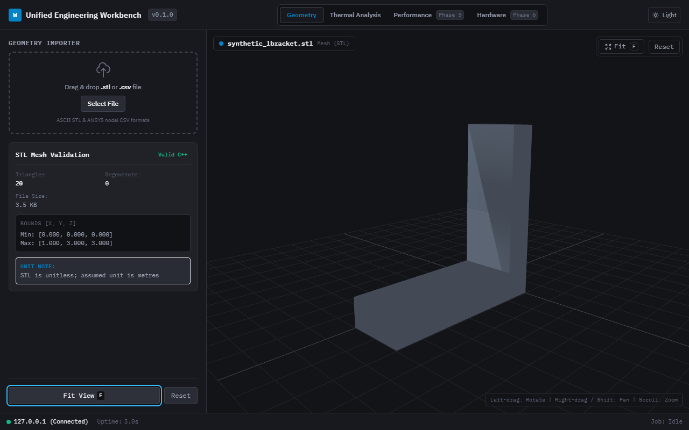

Host & Runtime
1. One-Click Native Host Launch
Packaged as a self-contained portable distribution. The root Launch.exe acquires a system-wide named Win32 mutex to guarantee single-instance execution, spins up an embedded loopback HTTP server with cryptographically random bearer authentication, and initializes an embedded Microsoft Edge WebView2 frame with automated fallback to the default web browser.
- Zero-configuration portable execution without installers
- Named mutex activates and brings existing window to front on duplicate launch
- Loopback security token prevents unauthorized local port probing